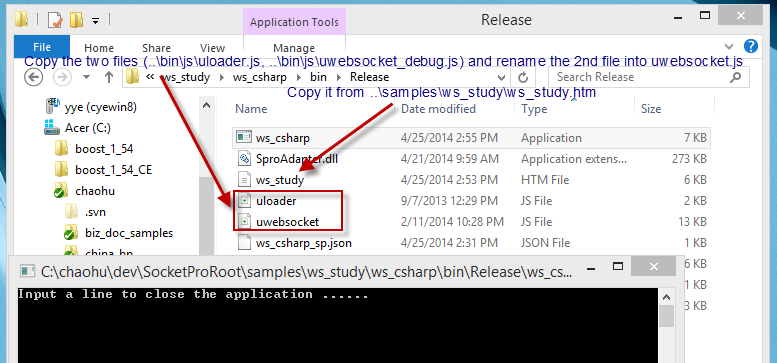
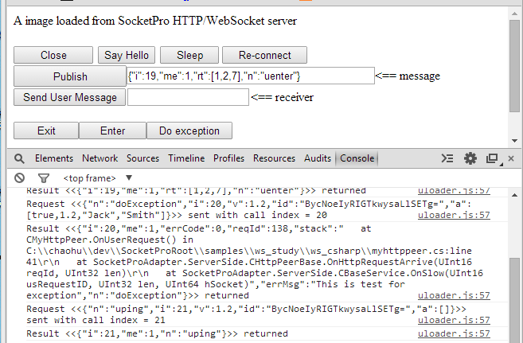
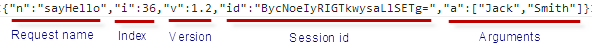
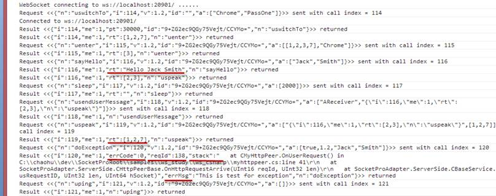
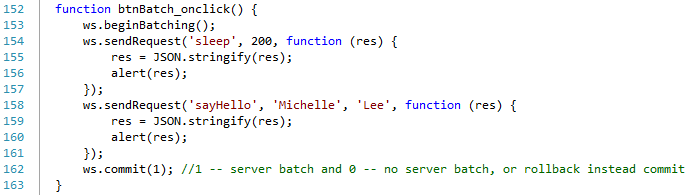

Access a SocketPro Server Anywhere by HTTP/WebSocket Protocols
Contents:
Introduction
Easy way to learn SocketPro adapter for websocket
· Compile C++ or C# ws_study project
· SocketPro HTTP/websocket-enabled server settings
· Enable JavaScript debug
Request JSON object
Response JSON object
· Three basic members
· uswitchTo members
· User defined returning string result
· Exception members
· Chat-related request returning results
· Caught chat-related message
Batch request JSON object
Required requests to be implemented
Error codes and their error messages
1. Introduction
SocketPro comes with system client and server core libraries which run on major platforms such as Windows (including Wince and Pocket PC), Linux and Mac. However, SocketPro core libraries, in the near future, will not be ported on various non-major platforms such as IBM mainframe, HP-Unix systems, Sun micro systems, etc. In addition, SocketPro already has a limited number of adapters available for major development environments. However, as you might conceive, SocketPro will not come with adapters for non-major development languages soon, although UDAParts is indeed trying innovative strategies to create new adapters for those languages with high market usage shares.
To solve the issues listed above, SocketPro server intentionally plans to create to a full-support web socket that allows the users in the previous situations access a SocketPro server application as long as it is enabled by HTTP/websocket service. We recommend that you use websocket protocol instead of classic HTTP protocol because websocket shows numerous advantages over traditional HTTP protocol, though SocketPro does support HTTP service as well.
Therefore, we create this short article to easily guide and quickly allow you to access a SocketPro server application from minor platforms or development languages by use of websocket protocol.
2. Easy way to learn SocketPro adapter for websocket
Compile C++ or C# project: To ease your use of websocket when accessing a SocketPro server application enabled with HTTP/websocket service, we create C++ and C# projects so that you can use one of two executable applications to experiment the supported requests. You could use any of several browsers as a client, which should have both debug console and websocket features supported. The projects are located at the directories ..\samples\ws_study\ws_cplusplus and ..\samples\ws_study\ws_csharp, respectively for C++ and C#.
SocketPro HTTP/websocket-enabled server settings: Afterwards, prepare a set of required files as shown in Figure 1 below. Note that you should use uwebsocket_debug.js instead of uwebsocket.js so that you can clearly watch how SocketPro javascript adapter works inside a browser. The second version of SocketPro adapater for websocket is given intentionally for your purposes, which could be helpful when writing your own adapter as you can easily step through code execution from a browser debugger.

Figure 1: Settings for a sample C# SocketPro server enabled with HTTP/websocket service
Enable JavaScript debug: At last, it is suggested that you turn on JavaScript adapter debug information inside the file uloader.js as shown in Figure 2.

Figure 2: Turn on or off SocketPro JavaScript adapter debug log
Once you turn on adapter debug log, you can see logged transaction JSON strings as shown in Figure 3 below.

Figure 3: Sample logged transaction JSON strings from SocketPro JavaScript adapter
3. Request JSON object
In short, SocketPro server side requires that you use JSON object with the following simple format, shown in Figure 4.

Figure 4: SocketPro JSON request object format
Note that the request index should always be increasing uniquely after web socket session is established. A session id is required for all requests except the request uswitchTo since its session id could be an empty string with zero length. The unique session id is automatically created at server side when a SocketPro server gets the request uswicthTo. The arguments array could be zero in length. Each of the arguments could be any type of valid JSON objects. SocketPro will use request name as a key to find a processing method at server side. The version is required, though its value is arbitrarily a two-digit number.
In regards to the details for each of the requests, you can easily access them from logged transaction JSON strings as shown in Figure 3 previously.
4. Response JSON object
Three basic members: A SocketPro server application will return a JSON object as a result with a limited number of variant formats as shown in Figure 5 below. However, all response JSON objects will contain three values, i, me and n for request index, self and request name, respectively.

Figure 5: Sample response JSON objects from SocketPro server with highlights
uswitchTo members: As shown in Figure 5 above, the request uswitchTo will return with two extra members, pt and id, which represents expected heart beat interval time in milliseconds and an auto-generated unique session identification number which must be used by all other requests.
User defined returning string result: As shown in the sample requests sayHello and sleep, a user defined request must return a string (rt) except in the case where there is an exception in processing.
Exception members: If there is an exception caught at server side, SocketPro will return extra four members, errCode, reqId, stack and errMsg, as shown in the request doException in Figure 5 above.
Chat-related request returning strings: In regards to the three requests uenter, uspeak and uexit, their return results are an array of integers, which represents chat group identification numbers.
Caught chat-related messages: In regards to the caught chat related messages, these responses will have four members, sender, serviceId, groups and msg that correlate in order with each of the following listed: message source sender, sender service identification number, sender chat group identification number and message. Note the member me should be zero to indicate that the message does not originate from my-self.
5. Batch request JSON object
As you may already know, SocketPro supports request batch for the best network efficiency. However, it is optional if you wish to do so as is shown in Figure 6 below.

Figure 6: Send multiple requests in batch by help of SocketPro adapter for JavaScript
Sending requests in batch will create a following JSON request object string.
{"n":"udoBatch","i":4,"v":1.2,"id":"f/5QS3A3SgGLlRckPbLmP9k=","a":[true,[{"n":"sleep","i":2,"v":1.2,"id":"f/5QS3A3SgGLlRckPbLmP9k=","a":[200]},{"n":"sayHello","i":3,"v":1.2,"id":"f/5QS3A3SgGLlRckPbLmP9k=","a":["Michelle","Lee"]}]]}
As you can see, the two requests above in Figure 6 are embedded into the batch request argument array.
6. Requests to be implemented
If you have a good background in JavaScript, you could easily and quickly convert our JavaScript adapter into yours. The following table lists all required requests that could be implemented.
|
Request name |
Comments |
|
Generic request |
Base request reused to create other requests |
|
uping |
It is served as heart beat. Adapter internally calls it automatically at an interval time as shown in the section 4 from the request uswitchTo |
|
uswitchTo |
Calling the method with user id and password to ask for SocketPro HTTP/websocket service |
|
uenter (optional) |
Calling the method from client to subscribe chat topics. It is optional as you can subscribe topics at server side |
|
uexit (optional) |
Calling the method from client to unsubscribe chat topics. It is optional as you can unsubscribe topics at server side |
|
uspeak (optional) |
Calling the method from client to publish a message onto one or more chat groups or topics. It is optional as you can publish a message at server side |
|
usendUserMessage (optional) |
Calling the method from client to send a message onto a receiver. It is optional as you can send a receiver a message at server side |
|
udoBatch (optional) |
Implementing this method enables requests batch at client for better network efficient. It is optional but highly recommended |
Table 1: A list of requests to be implemented from your adapter
7. Error codes and their error messages
The following table 2 lists all possible error codes and their error messages from SocketPro HTTP/websocket service.
|
Error code |
Error message |
|
0 |
Ok |
|
1 |
Bad JSON request |
|
2 |
Bad number of arguments |
|
3 |
Bad arguments |
|
4 |
Bad argument data type |
|
5 |
Bad request |
|
6 |
Empty request |
|
7 |
Not supported |
|
8 |
Authentication failed |
Table 2: A list of error codes and their error messages
If an error is detected at server side, its response JSON object will be added with a new member rc, and it will be set to a proper integer error code as shown in table 2 above.